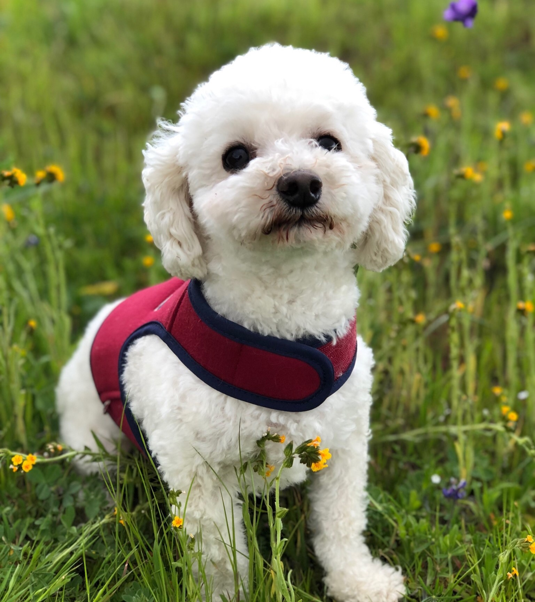
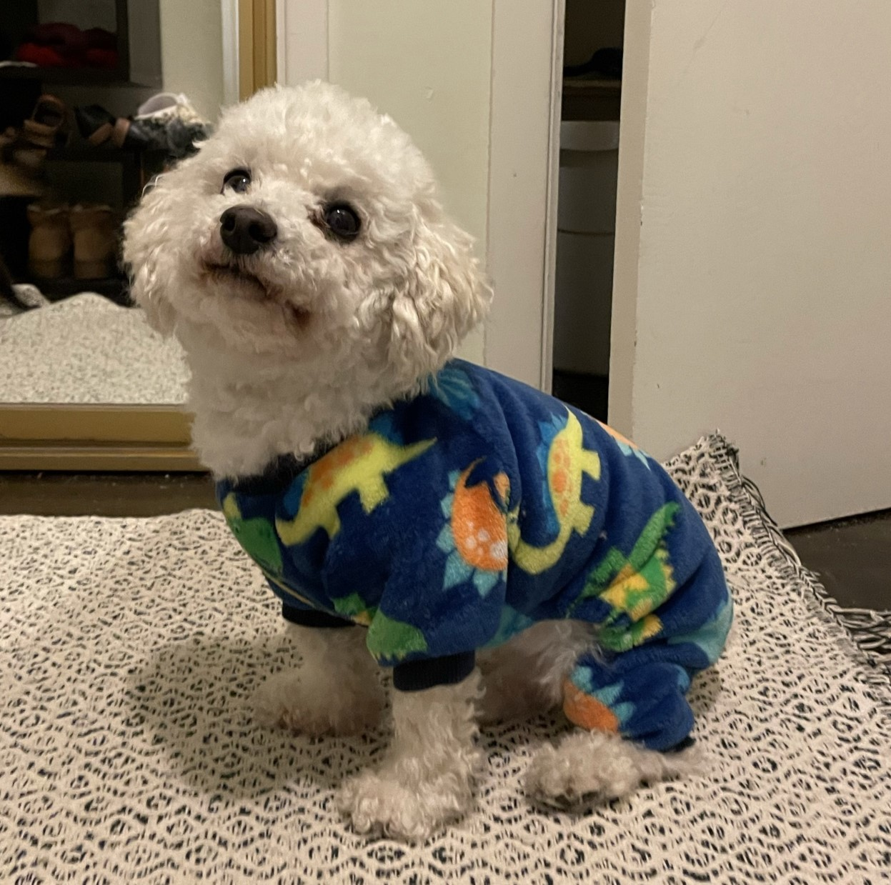
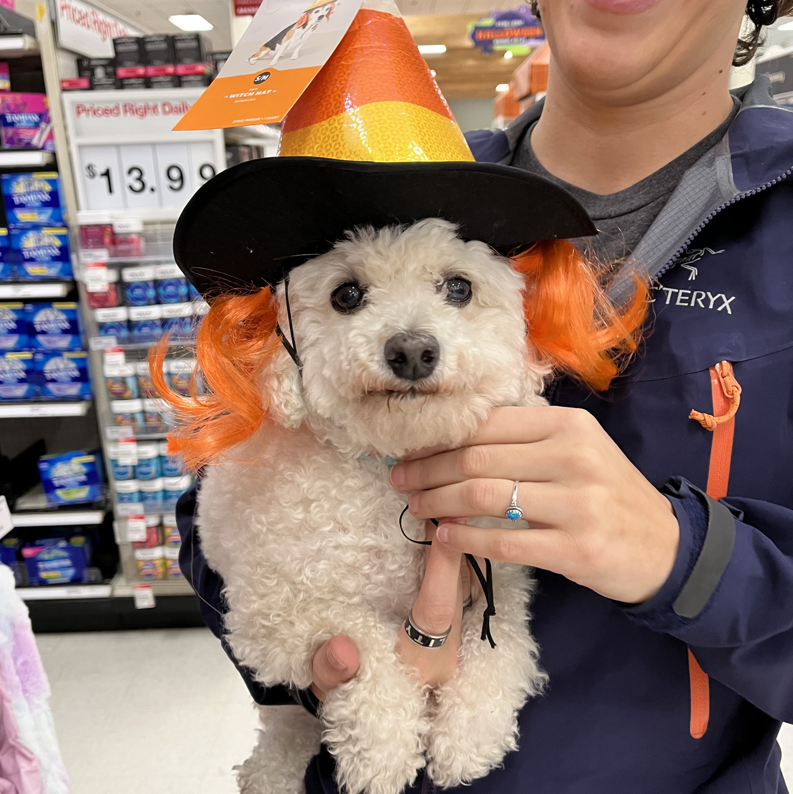
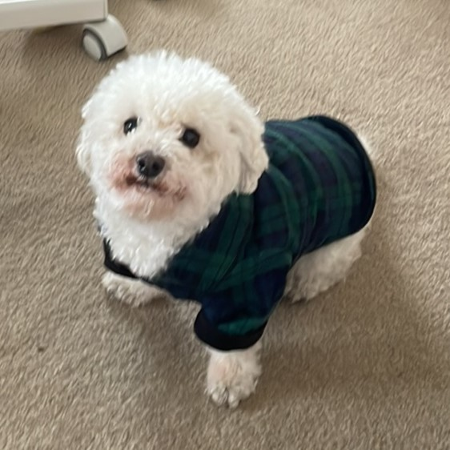
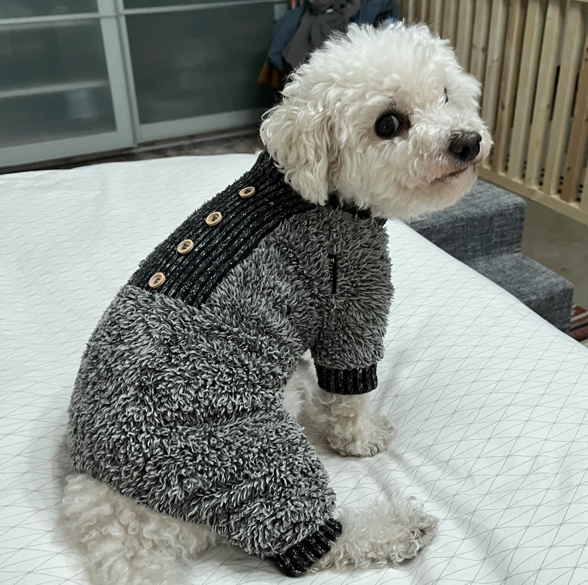
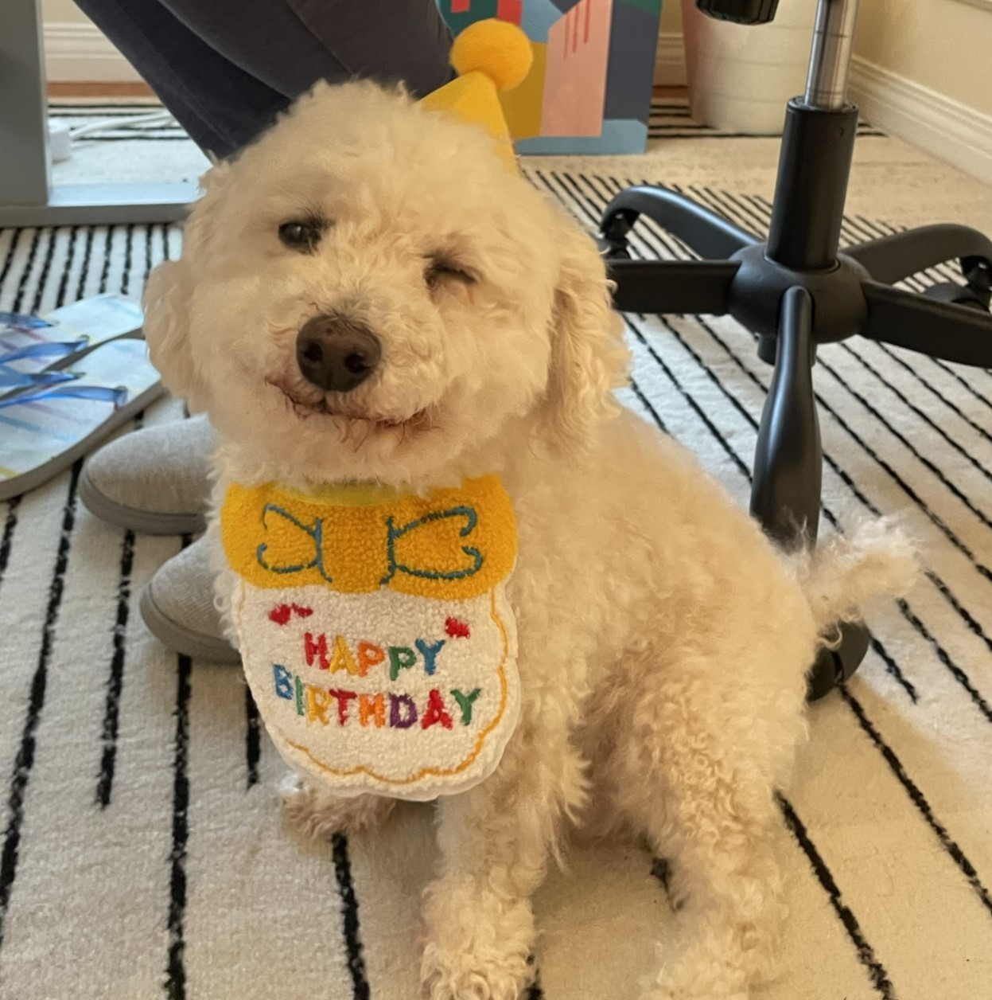
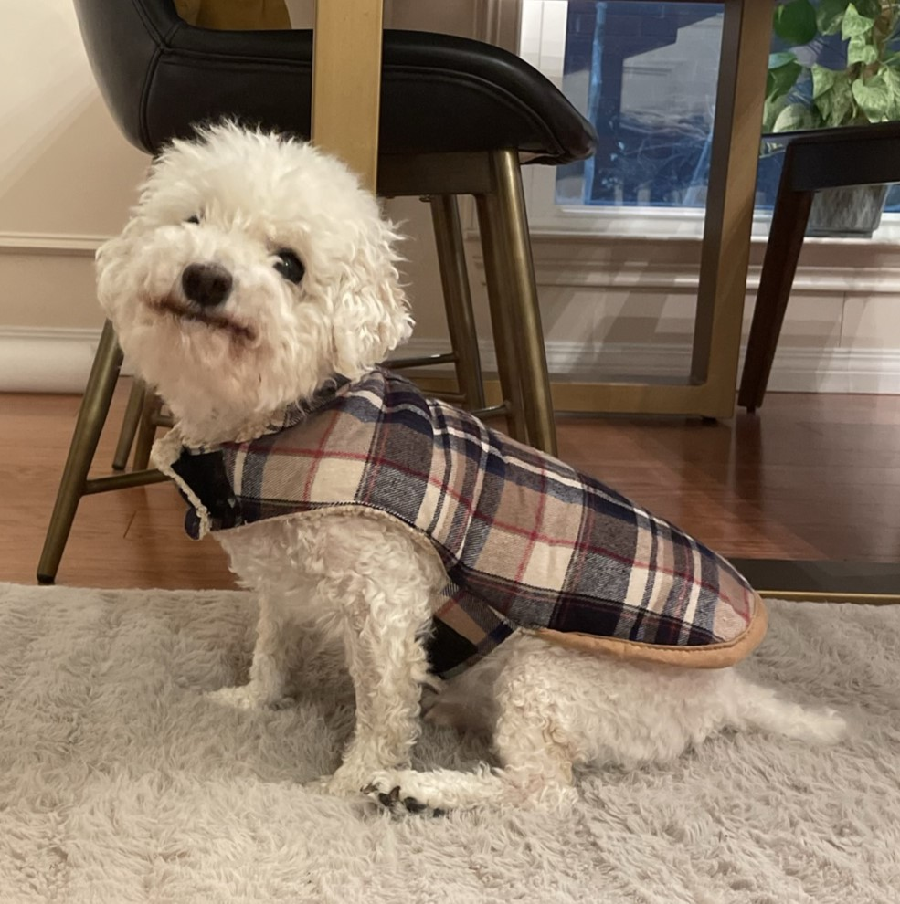
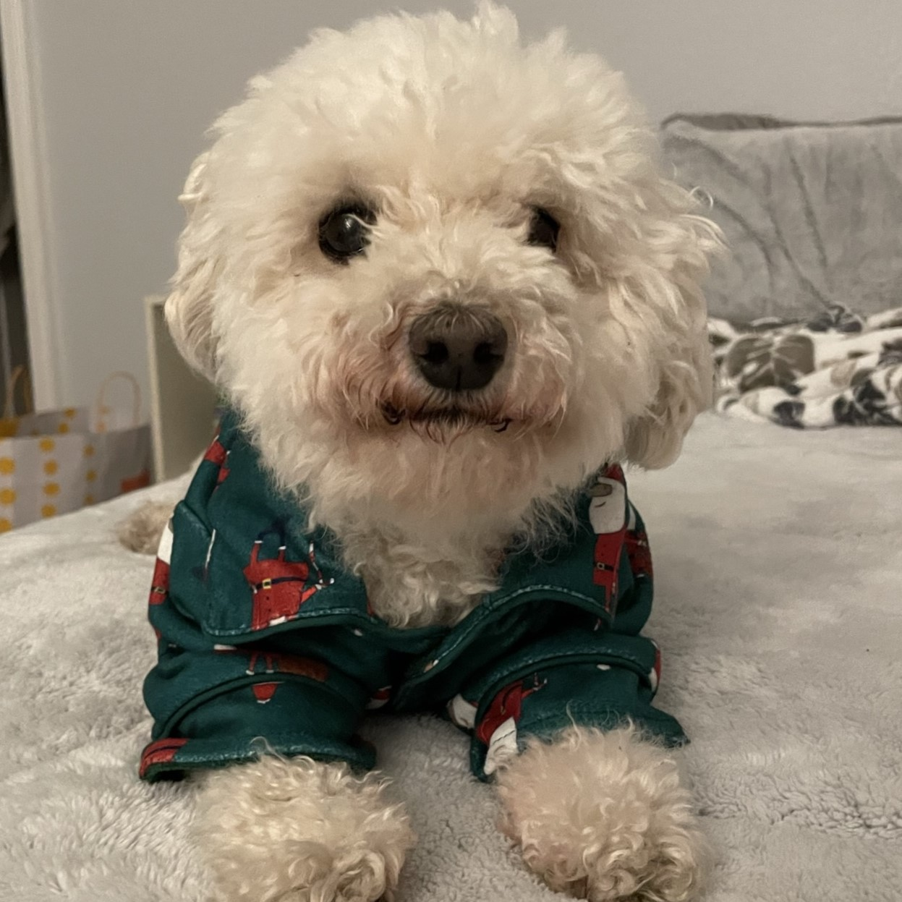
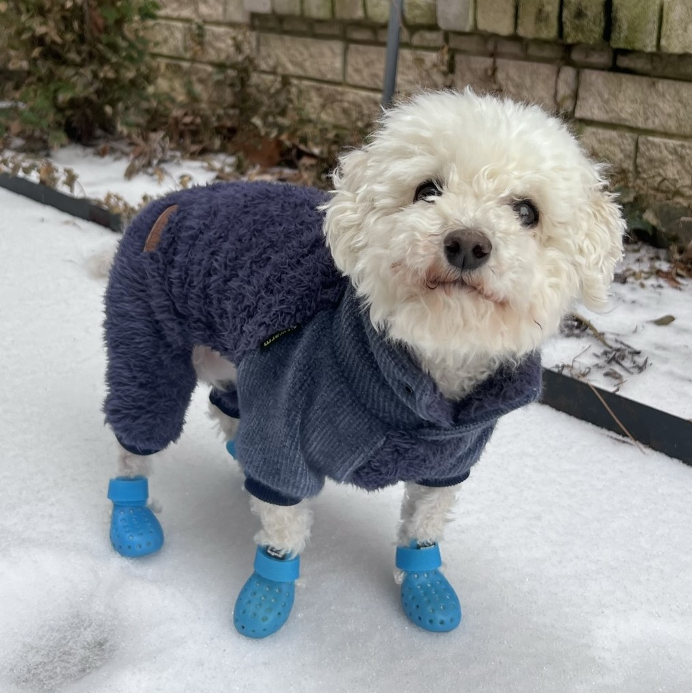

Cheddar is a 13 yr old Bichon Poodle. Recently awarded Dog of the Year for the 13th time (a coincidence) in a row, Cheddar now holds the title for most consecutive wins of this award in the Cheddar category. This will be his fifth year hosting CheddarCon.
Outside of CheddarCon, Cheddar also specializes in:







